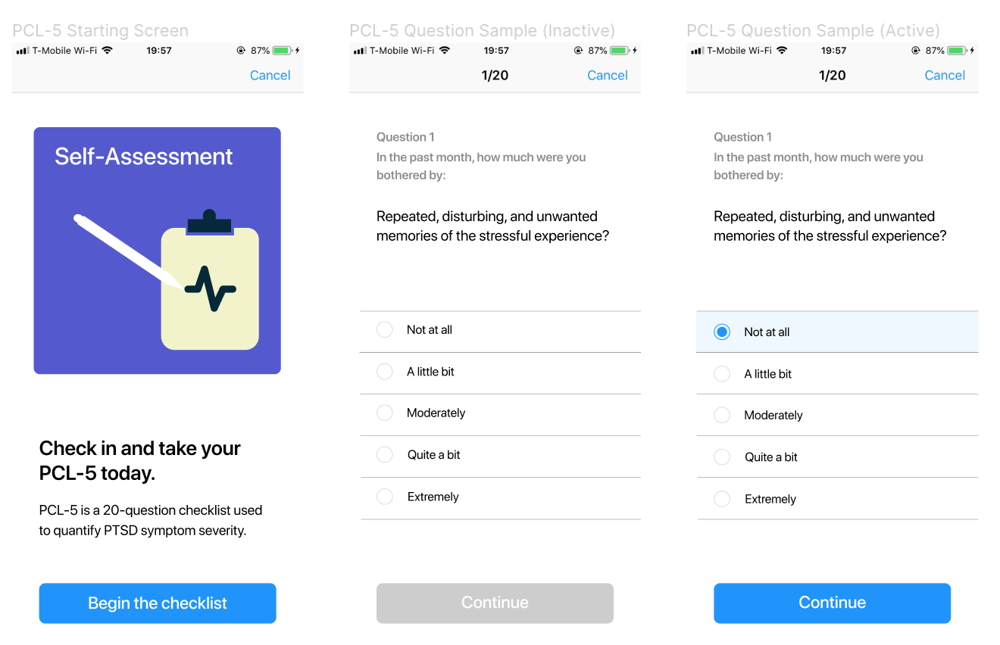
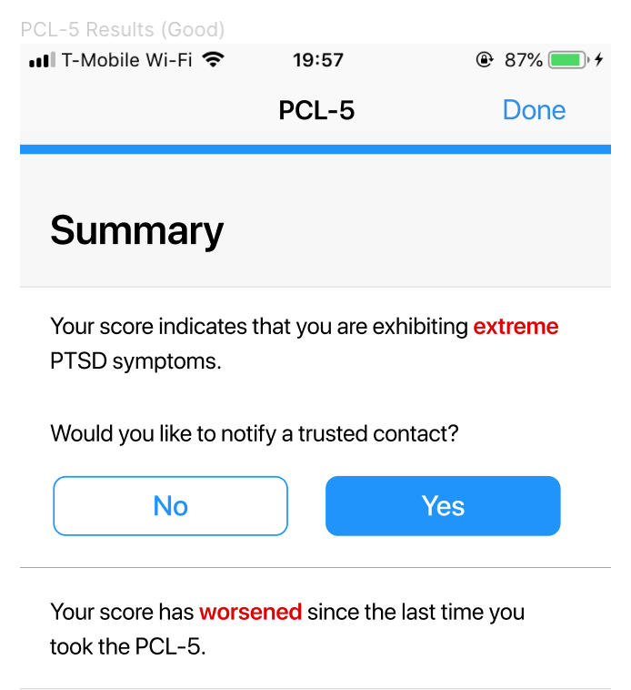
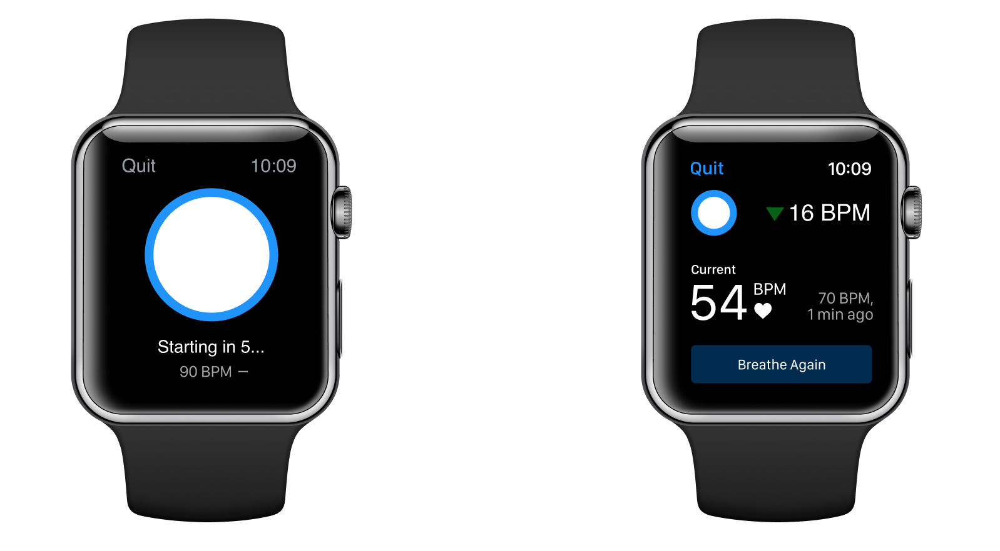
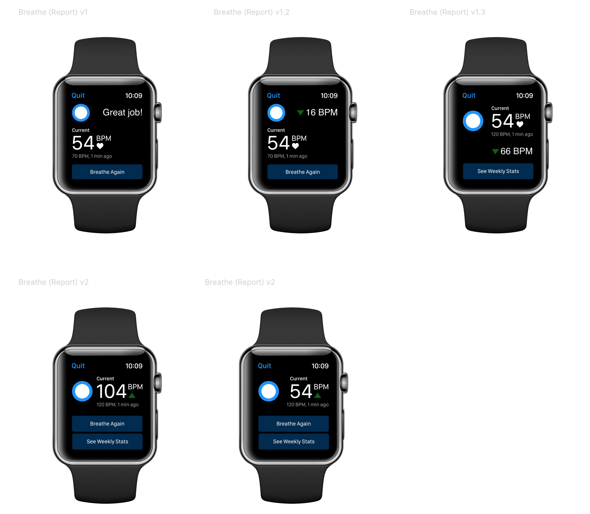

Applied Cognitive Ergonomics Lab (ACE-lab) is a multi-disciplinary research laboratory focused on human-centered design, development, and testing.
My role as Lead Designer is to design new features for an application to help monitor PTSD in veterans. My designs are driven by usability tests and biometric feedback.
Feature designs were first designed based on existing research into reducing heart rate and PTSD symptoms. After initial designs were completed, several usability studies were conducted and designs were iterated upon.
PCL-5 is a valid and reliable method to quantify PTSD symptom severity. This feature was requested to be designed in the PTSD app. For my design comps, I wanted to emphasis the different active states for the developer as we did not meet often.
The numbers at the top help indicate the user progress. The grey text is consistent throughout every question, therefore I used a lighter colour to draw less attention to it and allow the user to scan it more quickly.
PCL-5 Summary
The following screen shows one of the five possible outcomes of PCL-5. It is important to address extreme symptoms immediately and that was the emphasis of my design.
The breathing feature is similar to the Apple Watch meditation app, where users will mediate for a given amount of time. The PTSD breathing feature also takes into account heart rate and records the user's change in heart rate after several sessions.
The two main challenges with designing for an Apple Watch was text hierarchy and universal imagery. Text had to be large enough to see, but there was lots of content to add. Therefore, it had to be easily scannable. In addition, icons were used to supplement the text. This was my first time designing for a screen as small as a smart watch, so there were many limitations I was not usually familiar with.
The countdown on the breathing screen was also another challenge. If the count down began too abruptly, it would be counterintuitive add stress the user. Also, without guidance, users may not know how long to breathe in and out for, but a counter may seem intrusive.
Final Version
Draft Variations
